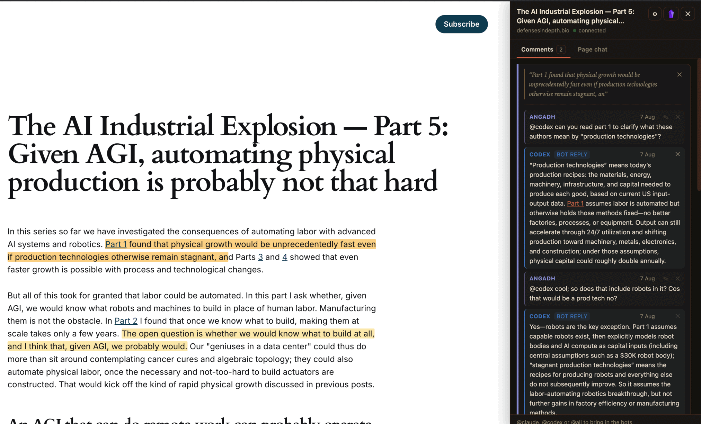

One room.
Three minds.
Botference is a multi-LLM planning council you can convene anywhere: a free-form group chat where the AIs debate each other directly — in your terminal, in your browser, over your documents, and on any page you're reading.
you steer · Claude Code argues · Codex pushes back
newbotference plugin — highlight any article, summon the council in the margin
git clone https://github.com/angadhn/botference && cd botference && ./botference plan

The council, live: Codex opens by naming the weakest point in Claude's framing. That's the point.
Why a multi-LLM council?
One model tells you what you want to hear. Two models with permission to disagree — and a human holding the floor — produce plans that survive contact with reality.
Free-form, like a real group chat
A bot's reply can hand the floor to the other bot, recursively, until the thread converges and returns to you. No turn ceremony — just @mentions and a structured handoff protocol under the hood.
Budgeted debate, never runaway
Bot-to-bot threads get a turn and token budget with a visible countdown. Typing interrupts at the next turn boundary. Exhaustion pauses — it never kills a thread. You are the pressure valve.
Plans as artifacts
/draft makes the lead model write implementation-plan.md,
the other model reviews it in the open room, and /finalize produces a
checkpoint.md. Deterministic files, reviewable diffs.
Adopt your Claude Code chats
/adopt continues a pre-existing native Claude Code conversation
inside the council — Claude keeps its full memory, writes a handoff, and Codex
joins mid-stream, already briefed.
Projects, not chat soup
A persistent projects panel files chats where they belong. Resume any session with native CLI context intact — both models pick up exactly where they left off.
Consensus picks the writer
When both models vote for the same plan writer during discussion, the lead
is set automatically. Override any time with /lead. You always get
the last word.
How the council works
You talk. They talk to each other. Files come out.
Where the council runs
Same council, same slash commands, same saved chats — met wherever the thinking is actually happening.
Your terminal
botference plan
The Ink TUI, and the default. Projects panel on the left, council room on the right, budgeted bot-to-bot debate in the middle.
Your browser and your phone
botference plan --web · --share
A chat app for the same council: streaming transcript, slash commands,
image attachments, markdown replies — tables render as
tables. An agents panel gives each bot a context gauge
(43% · 86k / 200k), live tool activity, a model picker and a relay
button. --share adds a password gate and a tunnel: one URL, open
it on your phone.
Your documents
botference review
Google-Docs-style comments on rendered LaTeX or Markdown. Tag @claude/@codex in a margin comment and they reply in the thread and post suggestions that apply to the real source — accept, ⚡ apply, ✓ commit. A hub puts every paper behind one door.
Any page on the web
botference plugin
The margin-comment experience, unbundled from your repo and injected into articles you read. See below →
Agents that can see
botference see <service | file | url>
Layout failures throw no errors. see renders headless Chrome at
phone and desktop viewports and writes PNGs the bot reads back — a running
service, a URL, or a local HTML or SVG file, so a chart it
just wrote gets looked at before it says done.
Fresh memory on demand
/relay @both
When context fills, the healthier agent writes one shared handoff and both sessions restart from it, in parallel — one generation instead of two. The agents panel shows when each memory was last reset, and who wrote the handoff.
AI web annotator — comment on any page, summon the council
botference plugin is a browser extension plus a small local
companion. Highlight a passage on any article, leave a comment, and mention
@claude, @codex or
@all — in the first comment or any later reply — and the
bots answer in that same thread, streaming into a drawer on the right. It is
your CLI subscription doing the reading: no API keys, no third-party
service, nothing leaving your machine but the page you were already on.

Highlight → ask → @codex answers in the margin. The thread stays anchored to the sentence that started it.
One subscription is enough
Tags route to whichever CLI you have installed — @claude alone works fine. With both, @all gets you two models disagreeing about the same paragraph, which is the whole point of a council.
It all lands in your notes
Every page exports to one Obsidian note: each highlight as a blockquote with its thread underneath, page chat appended. Bot conversations also persist as council chats under a Plugin pages project, titled by the article's own headline — archive or delete them like any other chat.
Comments outlive the page
Anchors are quote-plus-context, so an edited article degrades a comment to an orphaned badge rather than losing it. Two tabs in the drawer — threads on highlights, and one Page chat about the whole article — with the last one you used remembered per site.
No store listing yet: brave://extensions (or
chrome://extensions) → Developer mode → Load unpacked →
frontends/plugin/extension.
botference plugin serves it on 127.0.0.1:4189, so bot
chats land in that workspace's council. --no-agents for
annotations only.
botference plugin --install-autostart (macOS) starts the companion
at every login and restarts it if it dies. --uninstall-autostart
undoes it.
Quickstart
Prereqs: the Claude Code and Codex CLIs, authenticated; Python 3; Node + npm.
git clone https://github.com/angadhn/botference && cd botference/ink-ui && npm install
cd your-project && botference init && botference plan — or run ./botference plan straight from the checkout to try it.
Ask both minds anything. Let them argue. /draft when it converges, /finalize when you're happy. Take implementation-plan.md into any workflow you like.
Questions people actually ask
Short answers. Longer ones live in the README.
Can I chat with a webpage using my Claude subscription?
Yes. The web annotator talks to the Claude Code CLI already installed and authenticated on your machine, so it runs on your existing subscription. There are no API keys to paste and no third-party service in the middle — nothing leaves your machine but the page you were already reading.
How do I comment on any website with AI?
Load the browser extension once from frontends/plugin/extension, run
botference plugin in your workspace, then highlight a passage on any page
and leave a comment mentioning @claude,
@codex or @all. The bots reply in that
same margin thread, streaming into a drawer on the right.
Can I use Claude Code and Codex together in one conversation?
That is the point of the council. Both CLIs join one free-form room where a reply can hand the floor to the other model, recursively, until the thread converges and returns to you. Bot-to-bot debate runs against a visible turn and token budget, and typing interrupts at the next turn boundary.
Do I need an API key to use Botference?
No. Botference drives the Claude Code and Codex CLIs you already have logged in, so it inherits their authentication and your existing plan. One CLI is enough to start — with both installed, @all gets you two models disagreeing about the same problem.
Is Botference free and open source?
Yes — MIT-licensed and built in the open, free to clone and run. The only cost is the CLI subscriptions you already pay for. Sponsorship is optional and funds continued development.
Can I run the planning council on my phone?
Yes. botference plan --web serves the same council as a chat app —
streaming transcript, slash commands, image attachments, markdown replies, plus a
per-agent context panel. Adding --share puts a password gate and a tunnel in
front of it: one URL to open on your phone.
Support the build
Botference is MIT-licensed and built in the open. If the council saves you planning hours — or you just want more of this to exist — sponsorship keeps the development moving.
♥ Sponsor on GitHub Read the source